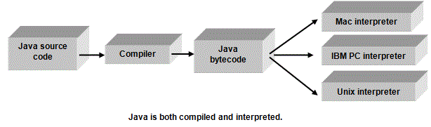

<div id="jsn-maincontent" class="span9 order1  row-fluid">
					<div id="jsn-maincontent_inner">
						<div id="jsn-centercol"><div id="jsn-centercol_inner">
									<div id="jsn-mainbody-content" class=" jsn-hasmainbody">
								<div id="jsn-mainbody-content-inner1"><div id="jsn-mainbody-content-inner2"><div id="jsn-mainbody-content-inner3"><div id="jsn-mainbody-content-inner4" class="row-fluid">
								
										
								
								<div id="jsn-mainbody-content-inner" class="span12 order1 ">
		
										<div id="jsn-mainbody">
										<div id="system-message-container">
	</div>

										<div class="item-page" itemscope itemtype="https://schema.org/Article">
	<meta itemprop="inLanguage" content="en-GB" >
	
		
						
		
	
	
		
								<div itemprop="articleBody">
		<p></p>
<h1 style="text-align: center;">Intermediate code</h1>
<p><strong class="NormalContentHeading">Compilers plus interpreters</strong><br> Some programs written in languages such as JAVA are both compiled and interpreted! A program is firstly compiled into an intermediate code known as bytecode. It is then distributed to users who use a wide range of computers such as Mac or PCs. These computers then run their own 'interpreter' to convert the bytecode into a code they can use. Languages such as JAVA are said to be ‘platform-independent’, because any program written in that language can run on any machine. These types of languages are ideal for use on the Internet; you don't need to know anything about the PC that will be running your code!</p>
 
<p><strong class="NormalContentHeading">Java</strong><br> Computers such as an IBM clone (a 'normal' PC) or a Macintosh each have their own CPUs that use their own machine code. If you write a program in PASCAL, for example, you can run it on a school PC only after you have translated it using a compiler into machine code. You couldn't, however, take that object code and run it on a Macintosh - because it has a different CPU that has a different instruction set. You would have to retranslate the source code using a different compiler. Java is an OO high level language. It was designed so that the code can run on any machine! How does it do this?</p>
<p>When a program is compiled, it is compiled into code known as Java 'bytecode', for a machine that doesn't exist, called a Java virtual machine!! The bytecode can then be distributed to different types of computers. Each of these types of computers will need to have their own type of interpreter (rather than a compiler). These interpreters can take bytecode and run it on that computer line-by-line.</p>
<p align="center"></p>
<p>Why not simply miss out the Java bytecode stage and distribute the source code and have a compiler for each type of machine rather than an interpreter? Amongst other reasons, compilers are more complex programs compared to interpreters. If you have a new type of CPU it is far easier to write a new interpreter than a new compiler.</p>
<p><strong class="NormalContentHeading">Java and the Internet</strong><br> Java is used extensively on the Internet. Small programs called applets are written by programmers and transmitted with html code across the Internet. If you have a browser that has a Java bytecode interpreter (most of the latest ones have!) and you have enabled your browser to accept Java applets, then they will run when downloaded. Suddenly, very boring html web pages can be turned into anything the programmer wants to turn them into! Not everyone likes the idea of downloading and running programs not guaranteed to be virus-free and which may compromise personal privacy. As a result, some people disable Java applets on their PC!</p>
<p></p>	</div>

	
							</div>

									</div>
				
							</div>
							
				        							
							
							</div></div></div></div></div>			
							
							
		        				</div></div> 
				</div></div>